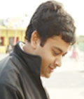
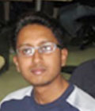

Speakers
-

Chad Fowler
Chad is an internationally known software developer, trainer, manager, speaker, and musician. Over the past decade he has worked with some of the world’s largest companies and most admired software developers. He loves to program computers and, as part of his role as CTO of InfoEther, Inc., spends much of his time solving hard problems for customers in the Ruby language. He is co-organizer of RubyConf, RailsConf, and RailsConf Europe and author or co-author of a number of popular software books, including the recently released The Passionate Programmer: Creating a Remarkable Career in Software Development.
-

Nick Sieger
Nick Sieger is an engineer at Engine Yard, working on JRuby and leading the effort to make the Java Virtual Machine a robust yet easy-to-use deployment platform for Rails and Ruby web applications. He created and co-maintains the JDBC adapter for ActiveRecord that JRuby on Rails uses for database connectivity, as well as the Warbler tool and JRuby-Rack library for dealing with Java application server deployment. He maintains a blog on Ruby and JRuby-related topics at http://blog.nicksieger.com/.
-

Ola Bini
Ola Bini works as a language geek for ThoughtWorks in Chicago. He is one of the JRuby core developers and have been involved in JRuby development since 2006. At one point in time, Ola got tired of all existing programming languages and decided to create his own, called Ioke. He has written a book called Practical JRuby on Rails Projects for APress, talked at numerous conferences, and contributed to a large amount of open source projects. His main passion lies in implementation languages, working on regular expression engines, trying to figure out how to create good YAML parsers - all with the final goal of taking our understanding of languages to the next level..
-
Arun Gupta
Arun Gupta is a GlassFish Evangelist working at Sun Microsystems. Arun has over 13 years of experience in the software industry working in various technologies, Java(TM) platform, and several web-related technologies. In his current role, he works very closely to create and foster the community around GlassFish. He has been with the Java EE team since it’s inception. And since then he has contibuted to all Java EE releases. He is a prolific blogger at and http://blogs.sun.com/arungupta. This blog has over 1000 blog entries with frequent visitors from all over the world reaching up to 25,000 hits/day.
-

Vineet Tyagi
Vineet Tyagi conceptualized and has been the co-creator of WebROaR - Ruby Application Server (http://webroar.in). Vineet has been dabbling in building successful software products for the past 15+ years, he is an avid supporter of open source technologies and community. Vineet resides near Delhi with his wife and 2 sons and has an opinion (sometimes correct) on everything.
-

Sarah Taraporewalla
Sarah is a ruby/.net developer currently working for ThoughtWorks. She is a strong believer in working efficiently, good design and people. She currently has two open source projects on the go - Slippers (a String Template port for ruby) and YatFram (Yet Another Testing Framework - a BDD style framework for unit, API and web-testing in .net). Sarah really likes learning concepts and libraries from one language/community and then applying them in a different language/community.
-

Aman King
Aman King is a developer at ThoughtWorks, Pune, India. He has contributed to successful deliveries of distributed Agile projects with technologies like Java, Rails, and even Java + Rails (JRuby). All of these have been complex web applications, built by teams distributed across the globe. As a speaker, Aman has presented at various events like an Agile talk in Barcamp Bangalore, a Refactoring workshop for Agile Mumbai, Ruby sessions at Ruby FunDay, and guest lectures at institutes.
-

Shreyank Gupta
Shreyank Gupta is a NIT Durgapur Graduate in Computer Science and Engineering and presently works at Red Hat, pune as a Associate software Engineer. Shreyank has been associated with the NIT Durpaur GNU Linux Users' Group in the past and has contributed to LDTP during his college days. Presently Shreyank is the Upstream for Dorrie - A Web Interface for Buding Custom Fedora Variants and some other web apps. Shreyank loves to develop web applications using Ruby on Rails and Django for work and play. He is also loves music and is a Wannabe Deejay.
-

Sai Venkatakrishnan
Sai Venkatakrishnan is working with Thoughtworks as a "Developer in Test" Journeyman. He spends his time dreaming about code, thinking in tests and contributing to opensource. He is the author and maintainer of ChromeWatir (A Watir implementation of Google Chrome browser), em-couchdb (A EventMachine based client for CouchDb), flash-watir, silverlight-selenium, schnell-jruby (Watir API using HtmlUnit and JRuby) and rrd-rb (Round Robin database bindings for Ruby). He is interested in topics ranging from evolutionary design, Agile coaching, large scale concurrency, functional languages, Event Driven frameworks, NoSql databases.
-

Hemant Kumar
Hemant is the Author of BackgrounDRb and Packet ruby libraries. He has also written network and Web programming frameworks in Scala. He won Redhat Lord of the code - 2005 for co-writing Octave-GTK library. He has been contributing to Ruby libraries such as EventMachine in his free time. He is an avid IRC user and can be found at #ruby-lang, #ruby-pro, #scala and #emacs among many others. He has been working with Ruby professionally for about 4 years and occasionally dabbles in Elisp, Java and Scala too. He is presently employed by Castle Rock Research at Bangalore. He is an avid reader and has read the Lord Of The Rings 6 times. JRR and Wodehouse are his favourites.
Personal Home Page: http://gnufied.org
Twitter URL: http://twitter.com/gnufied
Github stuff: http://github.com/gnufied -

Sidu Ponnappa
Sidu Ponnappa writes code because he likes it, and has been doing so since he was six. He has spent last five years as a consultant at ThoughtWorks, working on a variety of platforms, most recently Ruby. He blogs at http://blog.sidu.in and tweets at http://twitter.com/ponnappa.
-

Arvind G S
After graduating in Electronics and Communication Engineering joined IBS Software Services. Experienced in C, C++, Pro*C, Unix shell scripting and won the best performer award for the annual year 2007 and 2008. Resigned and started a firm - Foradian Technologies after 2.5 years of experience in IBS as Senior Software Engineer. Currently working as the CTO of Foradian Technologies Pvt Ltd and the Project Director of Fedena - An Open Source School/Campus Management Software by Foradian. Along with these doing research on different platforms like HTML 5.0, CSS 3.0, PHP 5.3.0 and ROR 2.3, web security etc.
-

Kapil Mohan
Kapil Mohan is Tech Lead at SlideShare. He's been heavily involved in all aspects of building SlideShare's core technology and the technical team. While programming is, and always will be his first love, productizing ideas and building teams, workflows and practices is what keeps him busy mostly. Having seen SlideShare from invention till now gives him a unique end-to-end vision about product development. Also, he's been developing with Ruby (and Rails) for almost 3.5 years, and thinks its a beautiful language. He has a Bachelor's Degree in Information Sciences from Delhi University. Traveling, cooking and spending time with family and friends consumes him in his free time. He writes at kapilmohan.com, tweets @kapilmohan and presents at slideshare.net/kapil.
-

Arun J
Arun J is a designer at SlideShare. Visual design, interaction, markup, CSS are indulgences that keep him busy and forever interested. He's passionate about building beautiful web pages. He believes a project at hand is only complete, if it enriches user experience, has clean and efficient markup, and reflects the timeless principles of typography and graphic design. A fellow wiser than Arun once said, "simplicity is the ultimate sophistication". His work is a constant effort to emulate this. He has a Bachelor's Degree in Visual Communications from GRD College of Science, Coimbatore. Free time finds himself drawing, tinkering with photography, mountain biking or toying with his artistic playground, Aahsome magazine (aahsome.com). He tweets @SimplyArun and his presentations are at slideshare.net/simplyarun.
-

Neeraj Kumar
Neeraj Kumar has dealt with numerous technologies which includes Ruby, Ruby on Rails, Ajax, Jruby, Jquery, Java, Javascript, HTML, CSS, C, C++, UNIX etc. over different operating systems like Solarus, Linux, Windows, OS X (MAC). He has developed http://www.cheeseexpress.co.in me which comprises the demonstration of Internationalization (which is also the subject of his talk in RubyConfIndia2010). He has also worked on https://eng.doubledyno.com/, http://www.sugarstats.com/, http://beta.solaro.com etc. projects.
-

Hari Krishnan
Harikrishnan works as a Developer with ThoughtWorks meditating on Agile and XP principles. He contributes to open source projects and is a "Concurreny paradigms" enthusiast.
-

Dasharatham Bitla
"Dash", as fondly called by industry, colleagues and associates, Dasharatham Bitla is the founder of BitlaSoft and mobee.in - an email 2 SMS messaging solution that meets a common mans blackberry dream.
Dash an M.Tech in Electrical Engineering, has more than a decade of experience in architecting, designing, developing, and supporting enterprise class web based products. In particular, he is responsible for building a SaaS based travel management solution at Bitla Software he founded; At Agile Software he managed two enterprise PLM product lines. He worked as a consultant in companies like Sun Microsystems, Lucent Technologies, and First Data Resources to help develop enterprise software products.
A technologist at heart, very well versed with technologies Ruby on Rails, J2EE, Smartphone App development, he serves as the CEO of the Bitla Software where he continues to drive a young team full of enthusiasm and passion for technology as well the future direction of the company. His passion for building innovative products compliments his entrepreneur spirit to make things happen. -

Brendan G. Lim
Brendan is currently the Director of Mobile Solutions at Intridea, Inc. Intridea develops high-performance, agile, Enterprise oriented Web 2.0 applications and services, geared to leverage collaborative technologies, social networking, mobile devices/applications and cloud computing. Before Intridea, Brendan spent his days as a systems architect at a mobile startup called kajeet, Inc. He also found the time to co-found, design, and lead development on Yappd, a microblogging social network, built on Rails, that was featured in such publications as PC Magazine, TechCrunch and Mashable.